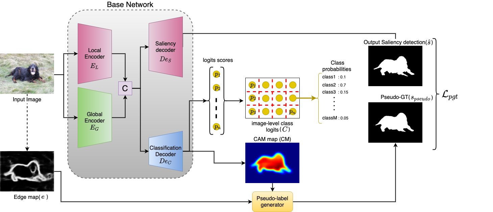
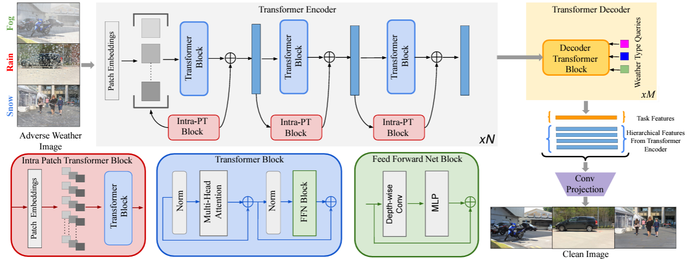
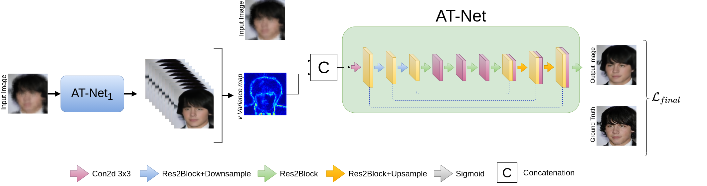
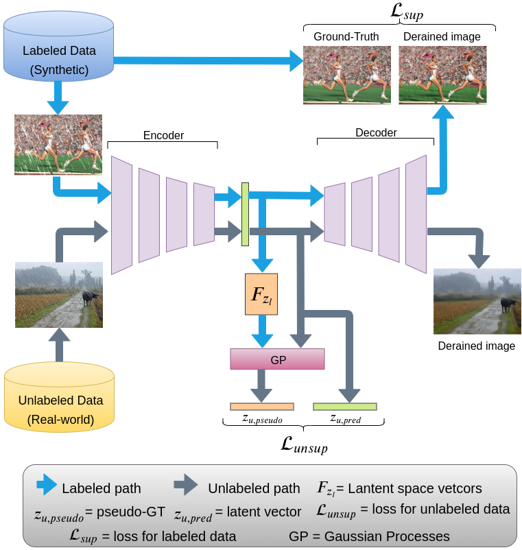
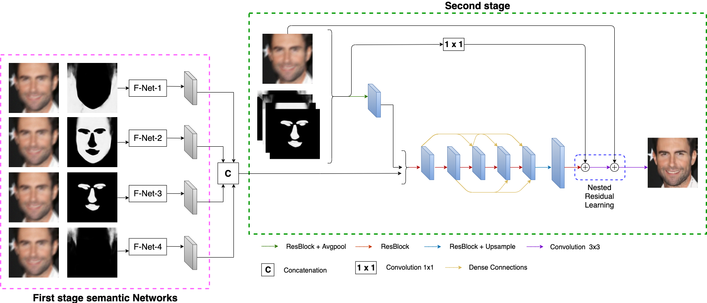
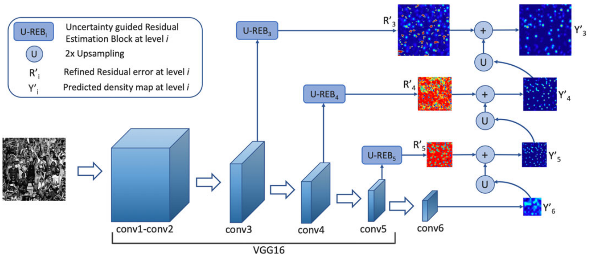
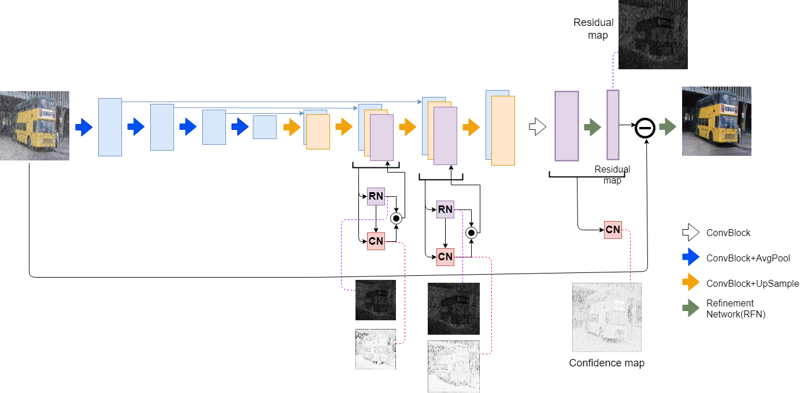

FutureDepth: Learning to Predict the Future Improves Video Depth Estimation
Rajeev Yasarla, Manish Kumar Singh, Hong Cai, Yunxiao Shi, Jisoo Jeong, Yinhao Zhu, Shizhong Han, Risheek Garrepalli, Fatih Porikli
ECCV 2024

3SD: Self-supervised saliency detection with no labels
Rajeev Yasarla, Renliang Weng, Wongun Choi, Vishal M Patel, Amir Sadeghian
IEEE WACV 2024
Mamo: Leveraging memory and attention for monocular video depth estimation
Rajeev Yasarla, Hong Cai, Jisoo Jeong, Yunxiao Shi, Risheek Garrepalli, Fatih Porikli
ICCV 2023
Art-ss: An adaptive rejection technique for semi-supervised restoration for adverse weather-affected images
Rajeev Yasarla, Carey E Priebe, Vishal M Patel
ECCV 2022

Transweather: Transformer-based restoration of images degraded by adverse weather conditions
Jeya Maria Jose Valanarasu, Rajeev Yasarla, Vishal M Patel
CVPR 2022

Learning to restore images degraded by atmospheric turbulence using uncertainty
Rajeev Yasarla, Vishal M Patel
Best Paper Award
IEEE ICIP 2021

Syn2Real Transfer Learning for Image Deraining using Gaussian Processes
Rajeev Yasarla, Vishwanath A. Sindagi, Vishal M Patel
Oral presentation
CVPR 2020

Deblurring face images using uncertainty guided multi-stream semantic networks
Rajeev Yasarla, Federico Perazzi, Vishal M Patel
IEEE TIP 2020

Jhu-crowd++: Large-scale crowd counting dataset and a benchmark method
Vishwanath A. Sindagi, Rajeev Yasarla, Vishal M Patel
IEEE TPAMI 2020

Uncertainty Guided Multi-Scale Residual Learning-Using a Cycle Spinning CNN for Single Image De-Raining
Rajeev Yasarla, Vishal M Patel
CVPR 2019